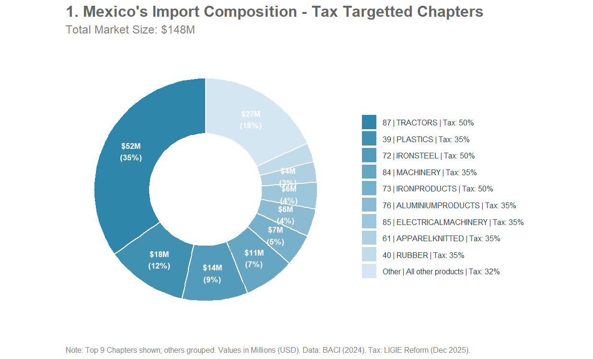
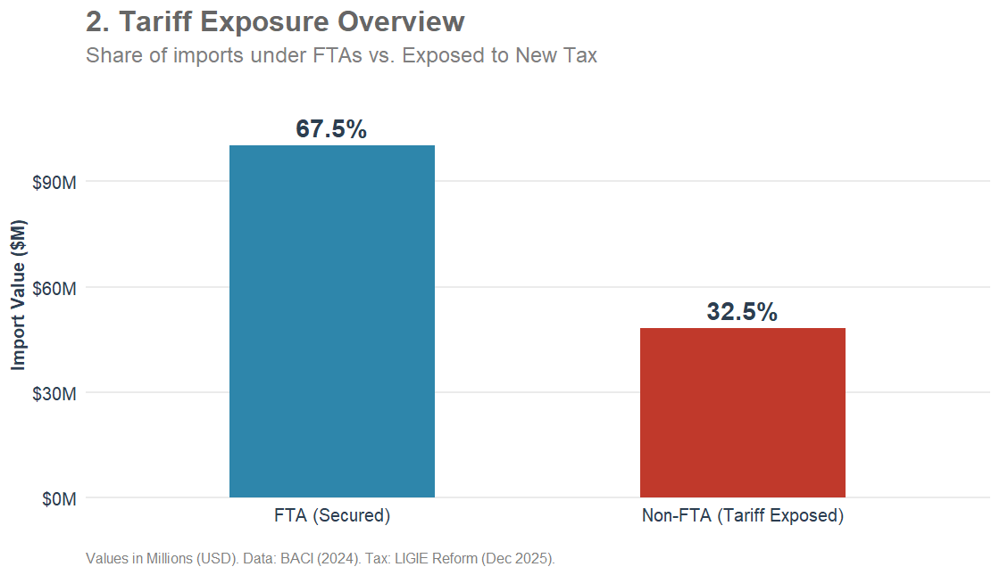
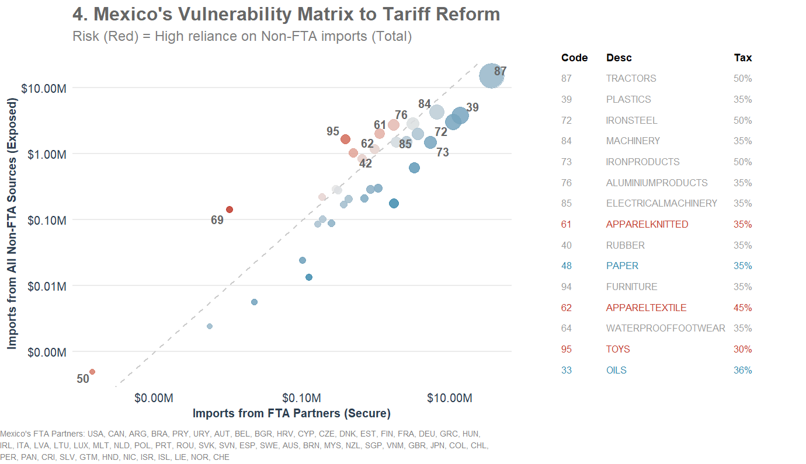

LIGIE Reform 2025 Mexico's Trade Network Dashboard
Executive Summary: On December 29, 2025, the Mexican government published a comprehensive reform to the Law of the General Import and Export Taxes (LIGIE). Effective January 1, 2026, the decree increases Most-Favored-Nation (MFN) import duties on 1,463 tariff lines within 34 HS Chapters. These increases, mainly between 25%-35% tariffs, target products from non-Free Trade Agreement (FTA) exporters.
View Official Decree (PDF)
View Official Decree (PDF)
1. Interactive Supply Chain Exploration
Select a product to view Mexico's International Trade Partners and Market Opportunities:
Image not found. Please check the folder path.
2. Market Macro Analysis
Import Trends
Tariff Exposure
Non-FTA Imports
Reform Vulnerability
3. Data Tables
Who Is At Risk (FTA vs. Non-FTA):
Tariff Range by Market Size:
Product Master List:
Methodological Note: Risk Simplification
This analysis provides a baseline tariff risk assessment but is subject to the following technical exclusions:- Non-Tariff Barriers: Risk classifications are based solely on ad-valorem duties. Non-tariff measures (NOMs), quotas, and compensatory duties are not factored into this model.
- RTA Specificity: While general Free Trade Agreements (FTAs) are mapped, individual agreements (e.g., USMCA or EU-Mexico) contain specific rules of origin and sector-specific exclusions, particularly in the automotive and textile industries.